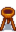
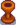
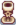

Skelettfeuerschale
Zur Navigation springen
Zur Suche springen
| Skelettfeuerschale | |
| Bietet eine mäßige Menge Licht. | |
| Information | |
| Quelle | Herstellung |
| Verkaufspreis | Unverkäuflich |
| Herstellung | |
| Rezept von | Schreinerladen ( |
| Zutaten | |
Die Skelettfeuerschale ist eine herstellbare Beleuchtung. Sie spendet Licht in der Nacht. Rechtsklick auf die Feuerschale macht das Feuer an oder aus.
Feuerschalenrezepte müssen in einer bestimmten Reihenfolge beim Schreinerladen gekauft werden. Das Kaufen einer Feuerschale schaltet die Nächste frei.
-  Holzfeuerschale (
 250 G)
250 G)  Steinfeuerschale (400 G)
Steinfeuerschale (400 G) Fassfeuerschale (800 G)
Fassfeuerschale (800 G) Stammfeuerschale (800 G)
Stammfeuerschale (800 G)- Goldfeuerschale (1.000 G)
-  Geschnitzte Feuerschale (2.000 G)
-  Skelettfeuerschale (3.000 G)
 Marmorfeuerschale (5.000 G)
Marmorfeuerschale (5.000 G)
Geschichte
- 1.5: Rezept von 10 Hartholz, 1 Solar-Essenz und 1 Kohle auf 10 Knochenfragmente geändert.
| Herstellbare Beleuchtung | |
|---|---|
| Herstellbare Beleuchtung | Fackel • Fassfeuerschale • Geschnitzte Feuerschale • Goldfeuerschale • Holzfeuerschale • Kürbislaterne • Lagerfeuer • Laternenpfahl, Eisen • Laternenpfahl, Holz • Marmorfeuerschale • Skelettfeuerschale • Stammfeuerschale • Steinfeuerschale |